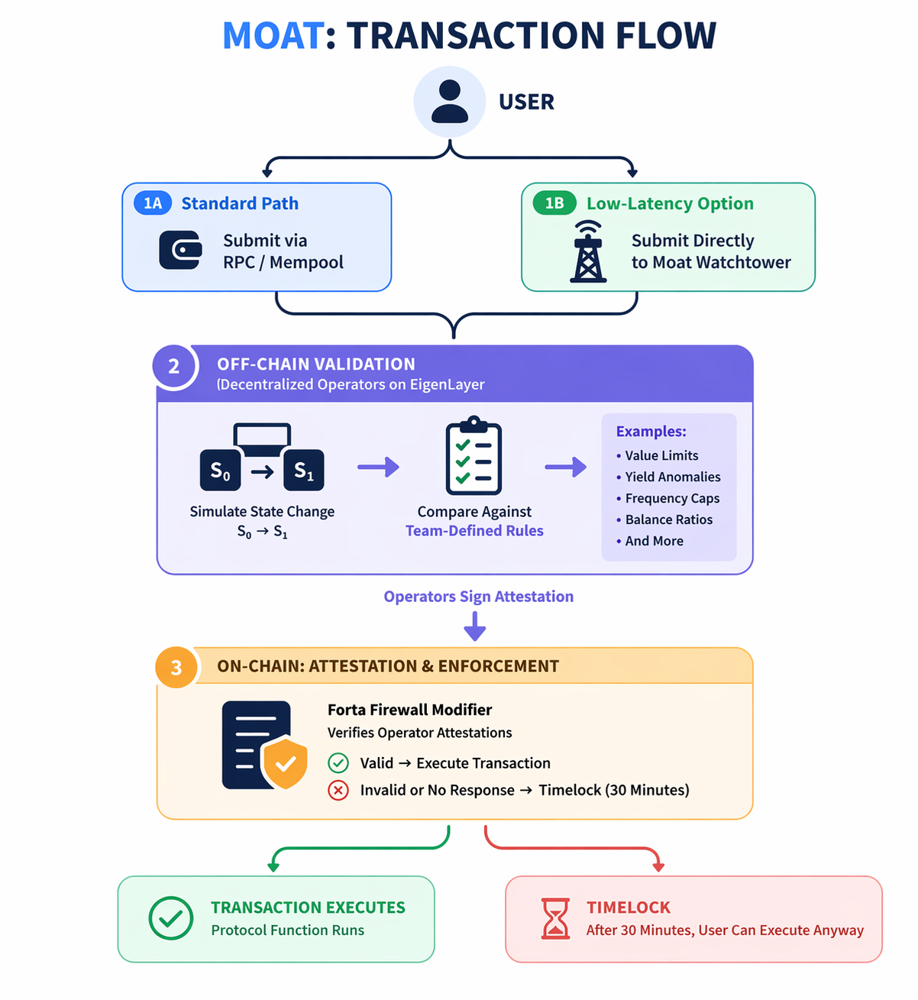

Confidence for builders & LPs
Put a clear story on the tin: critical entry points are gated, rules are explicit, and there is a time-bounded path for legitimate users if something misfires.
Open-source security
The first open-source, decentralized firewall that stops exploits before they execute on-chain.
$3.4 billion
stolen from DeFi in 2025 alone. Current solutions only detect attacks after the damage is done.
Loss totals depend on who counts what (hacks vs scams, bridges, CeFi-adjacent events). Treat this as directional—see independent reports below.
Moat validates every transaction against your protocol rules through a decentralized network of operators—blocking malicious transactions in real time while keeping a built-in user fallback so security never becomes silent censorship.
The next exploit should not be the moment you discover your defense strategy.
Most teams still rely on reactive playbooks: mempool monitoring, incident war rooms, or the nuclear option—pausing the entire protocol. Those tools matter, but they kick in after the transaction is already in flight. Capital moves at block speed.
Meanwhile shipping velocity keeps climbing—AI-assisted code, thinner review cycles, and auditors who cannot sit on every commit. The result is predictable: more attack surface, same finite audit bandwidth.
Moat is about moving defense upstream—to the calls that actually move value, before state commits.
A security layer LPs and users can reason about—without handing your protocol to a black box.
Put a clear story on the tin: critical entry points are gated, rules are explicit, and there is a time-bounded path for legitimate users if something misfires.
You define what “normal” looks like: caps, ratios, yield bands, frequency limits. The system emulates state and checks your economics—not a one-size-fits-all heuristic.
Built from primitives the ecosystem already uses: on-chain enforcement patterns like the Forta Firewall proxy, and decentralized attestation via an AVS-style operator set—not a single hosted API you cannot inspect.
Two paths in, one disciplined gate, two outcomes: fast execution or a fair delay.
Users can use normal RPC—or route through a Moat watchtower when latency matters. Operators emulate the call, run your rules, and co-sign attestations. On-chain, a Forta Firewall–style modifier enforces the verdict before your protocol logic runs.

The OWASP Smart Contract Top 10 for 2026 standardizes how the industry talks about contract risk—grounded in 2025 incident signals and practitioner input (see methodology and data sources). Below is a focused slice: categories that show up repeatedly in public post-mortems, with bar lengths scaled to illustrative incident counts for comparison—not dollar loss.
47 attacks mapped to absent sanity checks and flawed economic logic in public analyses. Example: Resolv—roughly $25M when broken minting logic reportedly allowed tens of millions of unbacked tokens against minimal collateral (~$200K), a classic “looks fine at the opcode level, wrong at the system level” failure.
29 attacks tied to manipulable or misused price feeds. Venus Protocol lost on the order of $2M when THE token pricing was exploited—oracle assumptions, not just swap math, were the lever.
13 incidents in this bucket despite reentrancy being textbook since The DAO. Solv lost about $2.7M from a double-minting / reentrancy-style path—state not finalized before external calls completed.
Makina Finance—about $5M drained using a $280M flash loan to warp oracle pricing in a single transaction: a small pricing bug amplified into a treasury event.
OWASP’s own 2026 materials stress that rankings come from aggregated 2025 smart-contract incidents plus surveys—for example on the order of 122 deduplicated contract-tagged incidents and roughly $905M in analyzed smart-contract–involved losses for that slice (see OWASP data sources). That is already a narrow subset of “everything that went wrong in Web3,” and it still spans dozens of teams.
Independent compendiums (e.g. Halborn’s Top 100 DeFi hacks) have reported that only a minority of breached protocols carried a prior audit in-scope for the exploited surface—exact percentages vary by report, but the pattern is stable: ship velocity and integration churn outrun point-in-time review.
Moat is aimed at that gap: continuous, transaction-level checks against your rules—not a replacement for audits, but a layer that can react when reality diverges from what reviewers signed off on months ago.
OWASP® is a registered trademark of the OWASP Foundation. Moat is not affiliated with OWASP; category names and numbering reference the public Smart Contract Top 10 (2026) (CC BY-NC-SA 4.0).
Ready to put a gate in front of your riskiest calls?